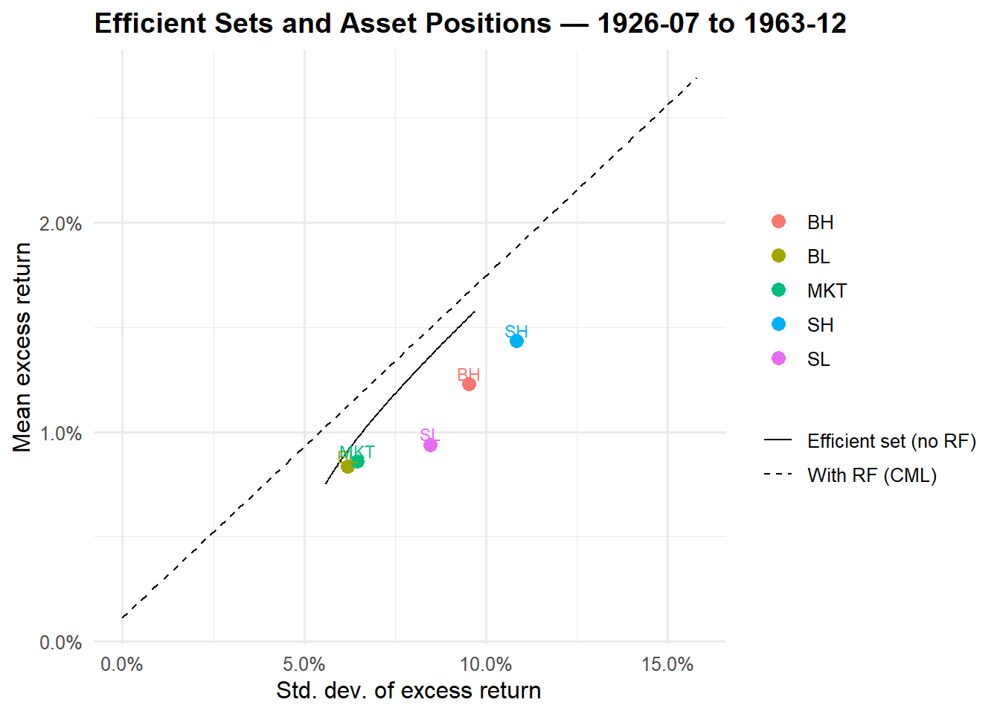
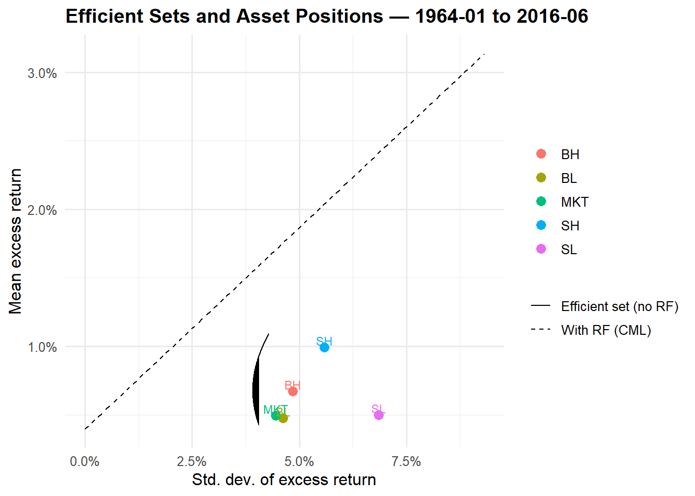

In this exercise, you are asked to explore some classic issues from the empirical literature on stock market returns. The data for this question can be found in an Excel spreadsheet on the textbook website. To perform the analysis, we suggest using MATLAB or similar software that allows you to write flexible code.
We consider six assets: four Fama-French portfolios (small-low, small-high, big-low, big-high), the market portfolio, and the 30-day Treasury bill. The four Fama-French portfolios are the corners of the \(2 \times 3\) size/value portfolios found on Kenneth French’s website. The market portfolio is the value-weighted portfolio of stocks listed on the NYSE, AMEX, and NASDAQ. The data set runs from July 1926 to June 2016.
Download the data from the textbook website. Do the exercises described in parts (i), (ii), and (iii) for the whole sample and also for two subsamples: July 1926–December 1963 and January 1964–June 2016.
Attaching package: 'kableExtra'
The following object is masked from 'package:dplyr':
group_rows
library(quantmod)
Loading required package: xts
Loading required package: zoo
Attaching package: 'zoo'
The following objects are masked from 'package:data.table':
yearmon, yearqtr
The following objects are masked from 'package:base':
as.Date, as.Date.numeric
######################### Warning from 'xts' package ##########################
# #
# The dplyr lag() function breaks how base R's lag() function is supposed to #
# work, which breaks lag(my_xts). Calls to lag(my_xts) that you type or #
# source() into this session won't work correctly. #
# #
# Use stats::lag() to make sure you're not using dplyr::lag(), or you can add #
# conflictRules('dplyr', exclude = 'lag') to your .Rprofile to stop #
# dplyr from breaking base R's lag() function. #
# #
# Code in packages is not affected. It's protected by R's namespace mechanism #
# Set `options(xts.warn_dplyr_breaks_lag = FALSE)` to suppress this warning. #
# #
###############################################################################
Attaching package: 'xts'
The following objects are masked from 'package:data.table':
first, last
The following objects are masked from 'package:dplyr':
first, last
Loading required package: TTR
Registered S3 method overwritten by 'quantmod':
method from
as.zoo.data.frame zoo
library(quantreg)
Loading required package: SparseM
library(gridExtra)
Attaching package: 'gridExtra'
The following object is masked from 'package:dplyr':
combine
library(fixest)
Attaching package: 'fixest'
The following object is masked from 'package:scales':
pvalue
# =========================================================# Empirical Frontier (R): Full sample + two subsamples# =========================================================# ---- 1) Load data ----# Change the file/sheet names below to match your spreadsheetpath_xlsx <-"../Data/Problem3.5_data.xlsx"sheet_nm <-"Sheet1"raw <-read_xlsx(path_xlsx, sheet = sheet_nm, col_names =c('Date',"SL","SH","BL","BH","MKT", "RF"), skip =1) |>mutate(Date =as.character(Date)) |>mutate(Date =as.Date(paste(Date,01), format ='%Y%m%d')) |>arrange(Date)# If returns are in percentages, convert to decimals:raw <- raw |>mutate(across(c(SL, SH, BL, BH, MKT, RF), ~ .x/100))assets <-c("SL","SH","BL","BH","MKT")rf_col <-"RF"stopifnot(all(c("Date", assets, rf_col) %in%names(raw)))
Estimate the vector of sample mean excess returns and the covariance matrix of excess returns for each of the samples. Use these estimates to compute two ex-post mean–variance efficient sets: one for portfolios not including the riskless asset and one including the riskless asset. Plot the two sets on a graph with the standard deviation of excess returns on the horizontal axis and the mean excess return on the vertical axis, and indicate where each of the four Fama-French portfolios and the market portfolio lie. Calculate the Sharpe ratios of the tangency portfolio and the market portfolio.
# Build excess returns for the risky assetsdf <- raw |>mutate(across(all_of(assets), \(x) x - .data[[rf_col]], .names ="{.col}_ex")) |>select('Date', 'RF', ends_with('_ex')) |>rename_with(~str_remove(.x, "_ex"), ends_with("_ex"), .cols =ends_with("_ex"))# ---- 2) Define samples ----rng_full <-c(ymd("1926-07-01"), ymd("2016-06-30"))rng_1 <-c(ymd("1926-07-01"), ymd("1963-12-31"))rng_2 <-c(ymd("1964-01-01"), ymd("2016-06-30"))samples <-list(`Full (1926-07 to 2016-06)`= df |>filter(Date >= rng_full[1], Date <= rng_full[2]),`1926-07 to 1963-12`= df |>filter(Date >= rng_1[1], Date <= rng_1[2]),`1964-01 to 2016-06`= df |>filter(Date >= rng_2[1], Date <= rng_2[2]))# ---- 3) Helper functions (Markowitz algebra, no short-sale constraints) ----stat_excess <-function(X, rf) {# X: data frame of the 5 *excess* returns (SL..MKT), rf: risk-free (level, not excess) R <-as.matrix(select(X, all_of(assets))) # T x N excess returns mu <-colMeans(R) # N x 1 (mean excess) S <-cov(R) # N x N (covariance)list(mu = mu, S = S, rf =mean(X[[rf_col]]), R = R)}mv_constants <-function(mu, S) { iS <-solve(S) one <-rep(1, length(mu)) A <-as.numeric(t(one) %*% iS %*% one) B <-as.numeric(t(one) %*% iS %*% mu) C <-as.numeric(t(mu) %*% iS %*% mu) D <- A*C - B^2list(A=A,B=B,C=C,D=D,iS=iS,one=one)}# Minimum-variance weights given target mean excess return m (sum w = 1)w_mv_target <-function(mu, S, m) { K <-mv_constants(mu, S)with(K, { lam <- (C - B*m) / D gam <- (A*m - B) / D w <- lam * iS %*% one + gam * iS %*% muas.numeric(w) })}# Tangency (max Sharpe) portfolio with risk-free (no weight constraint before normalization)w_tangent <-function(mu, S, rf_level) {# Here mu are *excess* means already => rf is only used for plotting the CML anchor iS <-solve(S) k <-as.numeric(t(mu) %*% iS %*% mu) # squared max Sharpe ratio w_unnorm <-as.numeric(iS %*% mu) w <- w_unnorm /sum(w_unnorm) # normalize to sum to 1 for reportinglist(w = w, sr =sqrt(k))}# Build analytical frontier (without risk-free) along a grid of target meansfrontier_df <-function(mu, S, n =200) { K <-mv_constants(mu, S)# target means grid from slightly below min asset mean to above max m_grid <-seq(min(mu)*0.9, max(mu)*1.1, length.out = n) var_grid <- (K$A*m_grid^2-2*K$B*m_grid + K$C) / K$Dtibble(mean = m_grid, sd =sqrt(pmax(var_grid, 0)))}# Capital Market Line points between rf and tangent portfolio expected returncml_df <-function(mu, S, rf_level, n =100) { tan <-w_tangent(mu, S, rf_level) m_tan <-sum(tan$w * mu) + rf_level # total mean (incl. rf) if you were to invest fully in tangent sd_tan <-sqrt(as.numeric(t(tan$w) %*% S %*% tan$w))# Points along the CML from rf to (rf + m_excess_at_tan) at multiples of tangent's sd sd_seq <-seq(0, sd_tan*1.4, length.out = n)tibble(sd = sd_seq,mean = rf_level + tan$sr * sd_seq )}# Format weights as a compact labelfmt_w <-function(w) paste0(names(w), "=", sprintf("%.2f", w), collapse =", ")# ---- 4) Run all samples and plot ----results <-lapply(names(samples), function(lbl) { X <- samples[[lbl]]# stats st <-stat_excess(X, rf_col) mu <- st$mu S <- st$S rfL <- st$rf# frontiers fr <-frontier_df(mu, S) cml <-cml_df(mu, S, rfL)# individual risky assets (excess mean vs sd) pts <-sapply(assets, function(a) { r <- X[[a]]c(mean =mean(r), sd =sd(r)) }) pts <-tibble(asset = assets,mean = pts["mean",],sd = pts["sd",])# tangency and market metrics tan <-w_tangent(mu, S, rfL) wtan <-setNames(tan$w, assets) sr_tan <- tan$sr# market portfolio Sharpe (ex-post) mkt_ex <- X$MKT sr_mkt <-mean(mkt_ex) /sd(mkt_ex)list(label = lbl, mu = mu, S = S, rf = rfL,frontier = fr, cml = cml, points = pts,w_tan = wtan, sr_tan = sr_tan, sr_mkt = sr_mkt)})# ---- 5) Visualization + console output ----for (res in results) {cat("\n=============================\n")cat("Sample:", res$label, "\n")cat("-----------------------------\n")cat("Mean excess returns (annualized if you like: multiply by 12):\n")print(round(res$mu, 6))cat("\nCovariance matrix (monthly excess returns):\n")print(round(res$S, 6))cat("\nRisk-free (average, monthly):", round(res$rf, 6), "\n")cat("\nTangency weights (sum to 1):\n")print(round(res$w_tan, 4))cat("Sharpe (Tangency):", round(res$sr_tan, 3), "\n")cat("Sharpe (Market): ", round(res$sr_mkt, 3), "\n")# Prepare df for plotting p_df1 <- res$frontier |>mutate(set ="Efficient set (no RF)") p_df2 <- res$cml |>mutate(set ="With RF (CML)")# Identify minimum-variance point on analytical frontier (for reference)# (Optional cosmetic: we keep entire frontier; the upper branch is the efficient one.) g <-ggplot() +geom_line(data = p_df1, aes(x = sd, y = mean, linetype = set)) +geom_line(data = p_df2, aes(x = sd, y = mean, linetype = set)) +geom_point(data = res$points, aes(x = sd, y = mean, color = asset), size =3) +geom_text(data = res$points,aes(x = sd, y = mean, label = asset, color = asset),nudge_y =0.0005, show.legend =FALSE, size =3) +scale_x_continuous("Std. dev. of excess return", labels =percent_format(accuracy =0.1)) +scale_y_continuous("Mean excess return", labels =percent_format(accuracy =0.1)) +scale_linetype_manual(values =c("Efficient set (no RF)"="solid","With RF (CML)"="dashed")) +ggtitle(paste0("Efficient Sets and Asset Positions — ", res$label)) +theme_minimal(base_size =12) +theme(legend.title =element_blank(),plot.title =element_text(face ="bold"))print(g)}
=============================
Sample: Full (1926-07 to 2016-06)
-----------------------------
Mean excess returns (annualized if you like: multiply by 12):
SL SH BL BH MKT
0.006817 0.011767 0.006251 0.009031 0.006474
Covariance matrix (monthly excess returns):
SL SH BL BH MKT
SL 0.005722 0.005554 0.003451 0.004427 0.003634
SH 0.005554 0.006715 0.003443 0.005395 0.003831
BL 0.003451 0.003443 0.002843 0.003191 0.002806
BH 0.004427 0.005395 0.003191 0.005155 0.003515
MKT 0.003634 0.003831 0.002806 0.003515 0.002896
Risk-free (average, monthly): 0.002793
Tangency weights (sum to 1):
SL SH BL BH MKT
-2.1845 2.8963 3.3128 -0.9518 -2.0729
Sharpe (Tangency): 0.193
Sharpe (Market): 0.12
=============================
Sample: 1926-07 to 1963-12
-----------------------------
Mean excess returns (annualized if you like: multiply by 12):
SL SH BL BH MKT
0.009399 0.014339 0.008361 0.012290 0.008612
Covariance matrix (monthly excess returns):
SL SH BL BH MKT
SL 0.007159 0.008578 0.004616 0.007239 0.004990
SH 0.008578 0.011752 0.005588 0.009727 0.006261
BL 0.004616 0.005588 0.003839 0.005192 0.003941
BH 0.007239 0.009727 0.005192 0.009085 0.005778
MKT 0.004990 0.006261 0.003941 0.005778 0.004173
Risk-free (average, monthly): 0.001144
Tangency weights (sum to 1):
SL SH BL BH MKT
-1.9567 1.9977 6.2070 0.4004 -5.6482
Sharpe (Tangency): 0.163
Sharpe (Market): 0.133

=============================
Sample: 1964-01 to 2016-06
-----------------------------
Mean excess returns (annualized if you like: multiply by 12):
SL SH BL BH MKT
0.004973 0.009931 0.004744 0.006704 0.004947
Covariance matrix (monthly excess returns):
SL SH BL BH MKT
SL 0.004697 0.003396 0.002617 0.002416 0.002665
SH 0.003396 0.003122 0.001912 0.002301 0.002096
BL 0.002617 0.001912 0.002131 0.001759 0.001995
BH 0.002416 0.002301 0.001759 0.002345 0.001895
MKT 0.002665 0.002096 0.001995 0.001895 0.001983
Risk-free (average, monthly): 0.00397
Tangency weights (sum to 1):
SL SH BL BH MKT
-1.9453 3.2886 3.0589 -0.6265 -2.7757
Sharpe (Tangency): 0.294
Sharpe (Market): 0.111

# ---- 6) Notes ----# - Returns are treated as MONTHLY. To report annualized means/SDs or Sharpe ratios,# multiply mean by 12 and SD by sqrt(12); Sharpe is invariant if both are annualized.# - The efficient set “without RF” is the full (unconstrained) Markowitz frontier allowing shorting.# If you need no-short-sale constraints, you’ll need a QP solver (e.g., quadprog) across target means.
Plot expected return against \(\beta\) for each of the portfolios. Calculate \(\alpha\) s and discuss your results.
# =========================================================# CAPM with fixest + data.table, SML plot, alphas/betas# (assumes df already in memory with excess returns)# =========================================================library(data.table)library(fixest)library(ggplot2)library(scales)# Convert to data.tableDT <-as.data.table(df)DT[, `:=`(SL_ex = SL,SH_ex = SH,BL_ex = BL,BH_ex = BH,MKT_ex = MKT)]# ---- define samples (data.table-style) ----s_full <- DT[Date >=as.Date("1926-07-01") & Date <=as.Date("2016-06-30")]s_1 <- DT[Date >=as.Date("1926-07-01") & Date <=as.Date("1963-12-31")]s_2 <- DT[Date >=as.Date("1964-01-01") & Date <=as.Date("2016-06-30")]samples <-list(`Full (1926–2016)`= s_full,`1926–1963`= s_1,`1964–2016`= s_2)# ---- function: run CAPM with fixest (NW lags) + SML plot ----capm_fixest_dt <-function(DT_sample, label, nw_lag =12) { assets <-c("SL_ex", "SH_ex", "BL_ex", "BH_ex")# run feols for each asset with Newey-West vcov res <-rbindlist(lapply(assets, function(a) { fml <-as.formula(paste0(a, " ~ MKT_ex")) m <-feols(fml, data = DT_sample, vcov =NW(lag = nw_lag), panel.id =~ Date + RF) ct <-coeftable(m)# Check coefficient names to avoid subscript errors intercept_name <-if("(Intercept)"%in%rownames(ct)) "(Intercept)"elsenames(coef(m))[1] slope_name <-if("MKT_ex"%in%rownames(ct)) "MKT_ex"elsenames(coef(m))[2]list(asset =gsub("_ex$", "", a), # Remove _ex suffix for displayalpha =coef(m)[[intercept_name]],t_alpha = ct[intercept_name, "t value"],beta =coef(m)[[slope_name]],t_beta = ct[slope_name, "t value"],mean_excess = DT_sample[, mean(get(a), na.rm =TRUE)] ) }))# Security Market Line: E[R_i^e] = beta_i * E[R_m^e] Em <- DT_sample[, mean(MKT_ex, na.rm =TRUE)] bmin <-min(0, res[, min(beta, na.rm =TRUE)]) bmax <-max(1.4, res[, max(beta, na.rm =TRUE)]) sml <-data.table(beta =seq(bmin, bmax, length.out =200)) sml[, mean_excess := Em * beta]# Plot: E[excess return] vs beta g <-ggplot() +geom_line(data = sml, aes(beta, mean_excess), linetype ="dashed") +geom_point(data = res, aes(beta, mean_excess, color = asset), size =3) +geom_text(data = res, aes(beta, mean_excess, label = asset, color = asset),nudge_y =0.0005, show.legend =FALSE, size =3) +scale_x_continuous(expression(beta)) +scale_y_continuous("Mean excess return", labels =percent_format(accuracy =0.1)) +ggtitle(paste0("Expected Return vs Beta — ", label,"\nDashed: E[R^e_i] = beta_i · E[R^e_m], NW lag = ", nw_lag)) +theme_minimal(base_size =12) +theme(legend.title =element_blank())print(g)# neat tablesetcolorder(res, c("asset","beta","t_beta","alpha","t_alpha","mean_excess")) res[]}# ---- run for all samples ----capm_out <-lapply(names(samples), function(nm) {cat("\n", nm, "\n", strrep("=", nchar(nm)+2), "\n", sep ="") out <-capm_fixest_dt(samples[[nm]], nm, nw_lag =12)print(out[, lapply(.SD, function(x) if(is.numeric(x)) round(x, 4) else x)])invisible(out)})
Test the hypothesis that the market portfolio is mean–variance efficient by calculating a Gibbons–Ross–Shanken (GRS) test statistic. Interpret your results.
# =========================================================# Gibbons-Ross-Shanken (GRS) Test for Market Efficiency# =========================================================library(mvtnorm)# Function to compute GRS test statisticgrs_test <-function(DT_sample, assets =c("SL_ex", "SH_ex", "BL_ex", "BH_ex")) {# Number of assets and observations N <-length(assets) T_obs <-nrow(DT_sample)# Extract excess returns matrix (T x N) Y <-as.matrix(DT_sample[, ..assets]) X <-as.matrix(DT_sample[, .(const =1, MKT_ex)])# Remove any rows with missing values complete_rows <-complete.cases(cbind(Y, X)) Y <- Y[complete_rows, ] X <- X[complete_rows, ] T_obs <-nrow(Y)# Run system of regressions: Y = X*B + E# where B is (2 x N) matrix of [alpha; beta] coefficients B_hat <-solve(t(X) %*% X) %*%t(X) %*% Y# Residuals (T x N) E_hat <- Y - X %*% B_hat# Sample covariance matrix of residuals (N x N) Sigma_hat <- (t(E_hat) %*% E_hat) / (T_obs -2)# Extract alphas (first row of B_hat) alpha_hat <- B_hat[1, ]# Market excess return statistics mkt_ex <- DT_sample[complete.cases(DT_sample[, .(MKT_ex)]), MKT_ex] mu_m <-mean(mkt_ex) sigma2_m <-var(mkt_ex)# GRS test statistic# GRS = (T-N-1)/N * (1 + mu_m^2/sigma2_m)^(-1) * alpha_hat' * Sigma_hat^(-1) * alpha_hat factor1 <- (T_obs - N -1) / N factor2 <-1/ (1+ mu_m^2/ sigma2_m)# Quadratic form: alpha' * Sigma^(-1) * alpha quad_form <-as.numeric(t(alpha_hat) %*%solve(Sigma_hat) %*% alpha_hat) GRS_stat <- factor1 * factor2 * quad_form# Under H0: alphas = 0, GRS follows F(N, T-N-1) distribution df1 <- N df2 <- T_obs - N -1 p_value <-1-pf(GRS_stat, df1, df2)# Critical values at common significance levels crit_01 <-qf(0.99, df1, df2) crit_05 <-qf(0.95, df1, df2) crit_10 <-qf(0.90, df1, df2)# Individual alpha t-statistics for reference se_alpha <-sqrt(diag(solve(Sigma_hat) *as.numeric(sigma2_m + mu_m^2)) / T_obs) t_alpha <- alpha_hat / se_alphareturn(list(GRS_statistic = GRS_stat,p_value = p_value,df1 = df1,df2 = df2,critical_values =c(`1%`= crit_01, `5%`= crit_05, `10%`= crit_10),alphas = alpha_hat,t_alphas = t_alpha,T_obs = T_obs,N_assets = N,market_sharpe = mu_m /sqrt(sigma2_m) ))}# Run GRS test for all samplesgrs_results <-lapply(names(samples), function(nm) {cat("\n", rep("=", 60), "\n")cat("GRS Test Results:", nm, "\n")cat(rep("=", 60), "\n") result <-grs_test(samples[[nm]])# Print resultscat(sprintf("GRS Test Statistic: %.4f\n", result$GRS_statistic))cat(sprintf("Degrees of freedom: (%d, %d)\n", result$df1, result$df2))cat(sprintf("P-value: %.6f\n", result$p_value))cat("\nCritical Values:\n")cat(sprintf(" 1%%: %.4f\n", result$critical_values[1]))cat(sprintf(" 5%%: %.4f\n", result$critical_values[2]))cat(sprintf(" 10%%: %.4f\n", result$critical_values[3]))cat("\nTest Interpretation:\n")if (result$p_value <0.01) {cat("*** REJECT H0 at 1% level: Market portfolio is NOT mean-variance efficient\n") } elseif (result$p_value <0.05) {cat("** REJECT H0 at 5% level: Market portfolio is NOT mean-variance efficient\n") } elseif (result$p_value <0.10) {cat("* REJECT H0 at 10% level: Market portfolio is NOT mean-variance efficient\n") } else {cat(" FAIL TO REJECT H0: Cannot reject market efficiency\n") }cat(sprintf("\nSample size: %d observations\n", result$T_obs))cat(sprintf("Market Sharpe ratio: %.4f\n", result$market_sharpe))cat("\nIndividual Alphas and t-statistics:\n") alpha_df <-data.frame(Asset =c("SL", "SH", "BL", "BH"),Alpha =round(result$alphas, 4),t_stat =round(result$t_alphas, 4),p_value =round(2* (1-pt(abs(result$t_alphas), result$df2)), 4) )print(alpha_df)invisible(result)})
In recent years there has been concern that the publicity given to value investing and the creation of quantitative investment strategies may alter the properties of value returns. One variant of this concern is that the ex- cess return to value may disappear permanently as quantitative investors bid up the price of value stocks to efficient levels. Another variant is that the excess return to value may become less stable as capital flows in and out of value stocks in response to shifting sentiment of end in- vestors about quantitative value strategies. Some have even argued that such shifting sentiment may cause the excess return to value to display a pattern of short-term positive autocorrelation (“style momentum”) and longer-term negative autocorrelation (“style reversal”).
Plot a one-year moving average of the excess return to small value stocks over small growth stocks (small-high minus small-low, or “small HML”) over the period January 1964–June 2016. Compare the be- havior of the plot in two subsamples: January 1964–December 1993 and January 1994–June 2016.
Calculate the mean, standard deviation, and Sharpe ratio of: • The excess return on the market portfolio over the Treasury bill; • The return on small HML; for each of the two subsamples.
Aggregate the small HML return to quarterly frequency and plot its autocorrelation function out to 12 quarters (3 years) in each of the two subsamples.
Discuss what your results suggest about the changing behavior of value returns in recent years. Do they support any of the concerns described above?